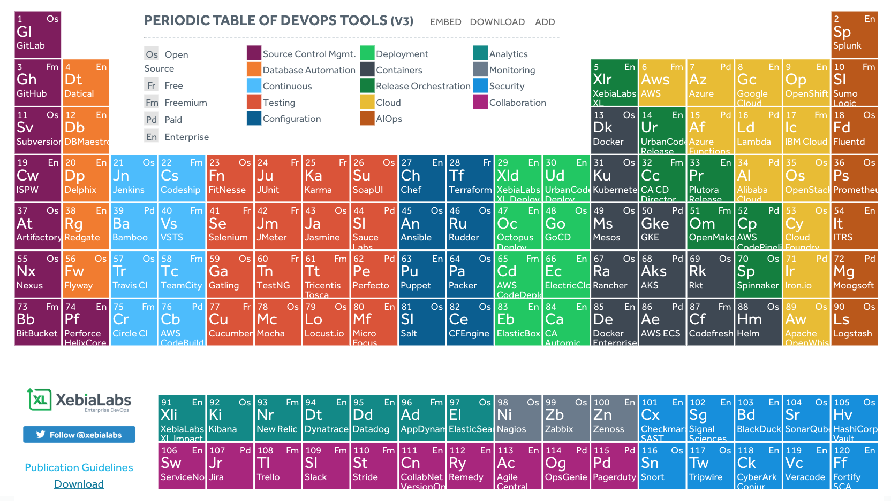

QCon 2018 Shanghai - Leading DevOps in the right way
Below content comes from QCon上海2018|全球软件开发大会
You can download slideshow from 大会演讲PPT合集
In this presentation, Qiao introduced DevOps to us from a historical point of view.
In the 1970s, we develop our software in a so-called waterfall model.
In the 1990s, we have Agile.
When it comes to 2010s, we made Continue Delivery.
We drive our development in a model that is from per project to per requirement, we build, test, and deliver out software from per month to per day, per hour or even per minute
Qiao said, we’re in a loop that he call it software delivery cycle. We make a plan, we code and build our software, we run the software, we monitor our software, and then we start again with a new plan.
Plan -> Build -> Run -> Monitoring -> Plan
In this cycle, Agile help us to make plan become a build quickly(from Plan to Build). And DevOps helps on Build to Run.
If we think about it from a people point of view, Agile creates an efficient communication environment for project manager, developer, and test engineer. Continue Integration(CI) quickly passes the software package to test engineer. And what DevOps solves, is to make developer tester, and operation and maintenance engineer cooperate better.
Qiao highlighted a sentence: “There is not an authoritative definition for DevOps”. By this way, he thinks that both Agile and DevOps are the same thing. They’re looking for a series of ways and practices to improve the cooperate quality and efficiency for different roles in software development, in order to speed up the delivery.
People and companies use tons of tools to make DevOps easier.

(Above image comes from: Periodic Table of DevOps Tools)
And companies also hire DevOps engineer, to try to apply DevOps in the development. However, sometimes and somehow tools and DevOps engineer may not able to help and even worst they will have a negative effect.
People expect to deliver changes faster and faster, from 1 month to 1 day. Generally, people start DevOps quickly and easily. People start with process automation(I don’t know what process is, from Lawrence), and then they will make automation test. People will gain a huge benefit from this 2 steps for sure. And people will try to create more and more automation tests which will not help to step onto next phase for DevOps. Qiao called it Overmuch Automation Test.
So, how can we have a better DevOps?
Qiao raises 2 key points:
1. Understand measurement correctly
2. Have 2nd evolution for DevOps
Understand Measurement
Measurement has to be visible, timely and actable. And most of the measurement is not quite actable. You can’t really take action immediately and directly when you check a measurement. And in order to turn measurement into action, you need lots of analysis and more and more other measurements. Things become complicated and you may not able to take a correct action from the result of the analysis.
And you will have to know:
Measuring things has its cost.
Measurement can’t tell everything to you.
Dev lead should find a way to manage the thing that can’t be measured.
Have 2nd evolution on DevOps
In the first evolution, people apply to DevOps without breaking the development model.
And in second evolution, we need to break the old world and create a new one(if need).
One example is, to change the user from tester to developer for automation test.
Before the change, test cases are created and run by tester. For the seek of that dev will willing to use it, we need to make the test cases to become:
* Running fast
* Easy to use
* Result should be reliable
* Test cases are up to date
It does take time and money to achieve above 4 goals.
(To explain more, above example is not only an IT problem. It’s already a common sense that Dev takes the responsibility to test, create automation test and maintain automation test in Evolve. But in other companies and if you’re in a role to push DevOps, you need to get human resource, money , and priority from your boss. And you will break the daily workflow for your workmates which leads to antagonistic sentiments. Department structrue need to be changed as well sometimes and it’s a problem can be solved from bottom to top. from Lawrence)
And Qiao introduces a concept - Small Business Unit(SBU) - to us.
SBU is to have less communicate cost and more alignment. A SBU contains business people, project manager, developer, test engineer, and operate and maintenance engineer. And that requires you not only pay attention to your development infrastructure, but also to your software architecture, company structure, culture, and incentive system.
In the end, Qiao recommends his book Continue Delivery: 2.0.